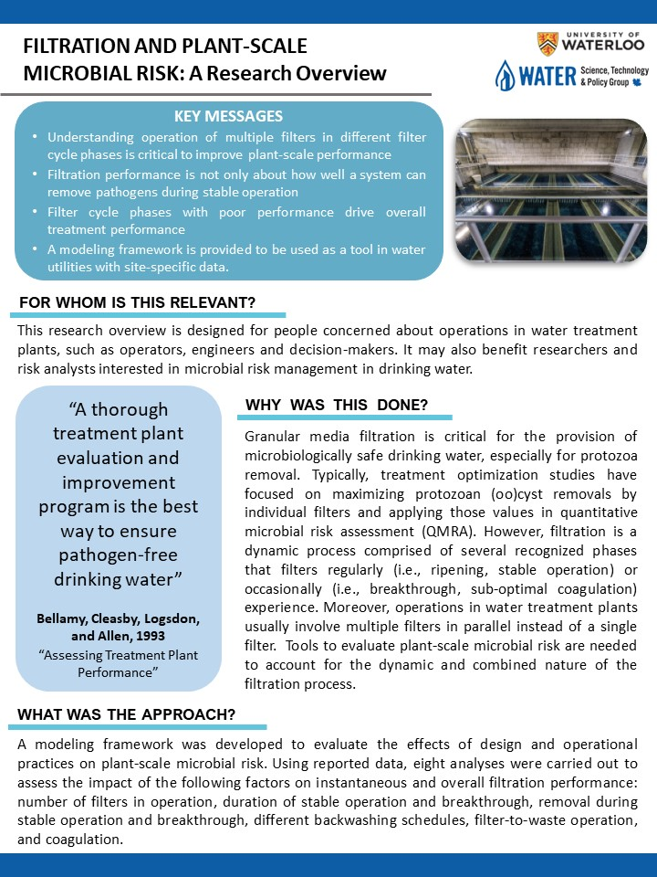
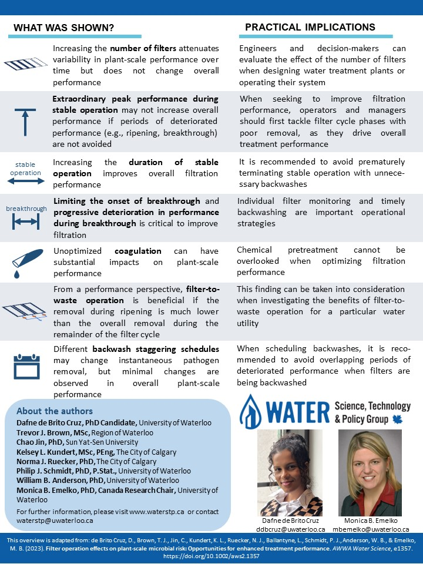

Implementing QMRA in drinking water treatment decision-making: Enhancing monitoring, assessing treatment sufficiency and responding to extreme events
WaterMicro 2025 - 22nd Health Related Water Microbiology Conference
Dafne de Brito Cruz - ddbcruz@uwaterloo.ca

